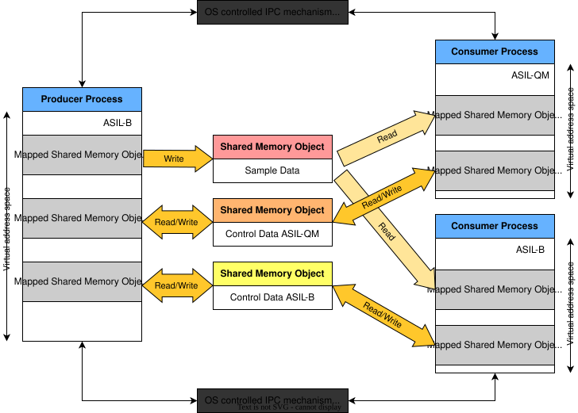
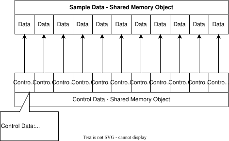
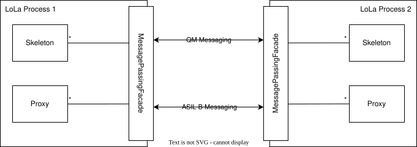

Architecture#
IPC Architecture
|
status: valid
security: YES
safety: ASIL_B
|
||||
Overview#
An brief overview of ipc is described here.
Description#
A description of the ipc module is located here
Rationale for Architecture Decision#
The basic idea of the ipc binding concept is to use two main operating system facilities:
Shared Memory: Shall be used for the heavy lifting of data exchange
Message Passing: Shall be used as notification mechanism
We decided for using two channels since implementing a notification system via shared memory would include the usage of condition variables. These condition variables would require a mutex. This could lead to the situation that a malicious process could lock the mutex forever and thus destroy any event notification. In general we can say that any kind of notification shall be exchanged via message passing facilities. The section Message Passing Facilities below will go into more detail.
The usage of shared memory has some implications. First, any synchronization regarding thread-safety / process-safety needs to be performed by the user. Second, the memory that is shared between the processes is directly mapped into their virtual address space. This implies that it is easy for a misbehaving process to destroy or manipulate any data within this memory segment. In order to cope with the latter, we split up the shared memory into three segments.
First, a segment where only the to-be-exchanged data is provided. This segment shall be read-only to consumers and writeable by the producer. This will ensure that nobody besides the producer process can manipulate the provided data.
The second and third segment shall contain necessary control information for the data segment. Necessary control information can include atomics that are used to synchronize the access to the data segments. Since this kind of access requires write access, we split the shared memory segments for control data by ASIL Level. This way it can be ensured that no low-level ASIL process interferes with higher level ones. More information on shared memory handling can be found in Shared Memory Handling.

Fig. 2 Mixed criticality setup for zero-copy IPC#
One of the main ideas in this concept is the split of control data from sample (user) data. In order to ensure a mapping, the shared memory segments are divided into slots. By convention, we then define that the slot indexes correlate. Meaning, slot 0 in the control data is used to synchronize slot 0 in the sample data. More information on these slot and the underlying algorithm can be found in Synchronization Algorithm.

Fig. 3 Relation of control data and sample data#
Static Architecture#
The overall static architecture of the ipc module is located <TBD>
Message Passing Facilities#
The Message Passing facilities, will not be used to synchronize the access to the shared memory segments. This is done over the control segments. We utilize message passing for notifications only. These notifications include:
event notification
partial restart
This is done, since there is no need to implement an additional notification handling via shared memory, which would only be possible by using mutexes and condition variables. The utilization of mutexes would make the implementation of a wait-free algorithms more difficult.
Instead, we use an OS feature for notification:
QNX Message Passing (under QNX)
Unix Domain Sockets (under Linux)
As illustrated in the graphic below a process should provide one message passing port to receive data for each supported ASIL-Level. In order to ensure that messages received from QM processes will not influence ASIL messages, each message passing port shall use a custom thread to wait for new messages. Further, it must be possible to register callbacks for mentioned messages. These callbacks shall then be invoked in the context of the socket specific thread. This way we can ensure that messages are received in a serialized manner.

Fig. 4 Message Passing in LoLa#
Synchronization Algorithm#
A slot shall contain all necessary meta-information in order to synchronize data access. This information most certainly needs to include a timestamp to indicate the order of produced data within the slots. Additionally, a use count is needed, indicating if a slot is currently in use by one process. The concrete data is implementation defined and must be covered by the detailed design.
The main idea of the algorithm is that a producer shall always be able to store one new data sample. If it cannot find a respective slot, this indicates a contract violation, which indicates that a QM process misbehaved. In such a case, a producer should exclude any QM consumer from the communication.
This whole idea builds up on the split of shared memory segments by ASIL levels. This way we can ensure that an QM process will not degrade the ASIL Level for a communication path. In another case, where we already have a QM producer, it is possible for an ASIL B consumer to consume the QM data. In this scenario, there is no separate control data for ASIL B, and they instead interact on the control data for ASIL QM. This is because, the data is QM and it is impossible for the middleware to apply additional checks to enhance the quality of data. This can only be done on application layer level. Hence, separating QM and ASIL consumers holds no benefit.
Service Discovery#
The communication framework must be capable to discover available service offers at runtime. The offered services are differentiated by:
service id (a unique identifier per different service interface)
instance id (a unique identifier per different producer offering the same service interface)
criticality level
version (not yet supported, see Roadmap)
To reduce resource consumption we decide against using an approach with a service registry daemon. Instead we choose to use operating system facilities to achieve a performant service discovery.
The key technology behind the service discovery is the inotify subsystem of POSIX compliant operating systems. It allows resource efficient and performant tracking of changes in the filesystem.
Keeping track of available service instances is left to the operating system. Producers notify the OS about new service offers by creating a flag file. Consumers either crawl the filesystem for existing offers or attach an inotify watch to wait for upcoming offers. Whenever a new file is created, the OS automatically checks for impacted inotify watches and notifies each watch with an appropriate event.
Also complex search requests where a consumer wants to know about all service instances with the same service interface, can be solved efficiently with the inotify subsystem.
Service discovery is currently fully explicit. Implicit service discovery for consumers is on our Roadmap. The goal is to handle service discovery transparently wherever possible.
Partial Restart Capability#
Partial restart capability means, that one of several communication partners may crash at any point in time and will still be able to start up again and rejoin the communication, without affecting the other communication partners.
Challenge to overcome#
There is a shared state held in shared memory (the control data), which is maintained by all communication partners (provider and consumers). Consumers annotate within this shared state, which data (events/fields) they are currently consuming (and therefore blocking underlying slots from re-use by the producer). The provider annotates within this shared state, which slots are currently blocked for data updates that can’t be accessed by consumers.
When a communication partner crashes, it may leave slots blocked within the shared state. When it restarts later, it has to reclaim/re-use or free exactly the same slots, it claimed in a previous run. Not doing so, would lead to resource exhaustion, since the slots would remain blocked indefinitely for either the producer or consumers. This requires, that a restarting communication partner knows exactly, which changes it had done to the shared state previously in order to roll them back again.
Recovery mechanism#
The mechanism to enable the cleanup/recovery of shared state by a restarting communication partner is based on transaction logs:
Each consumer and the producer owns a corresponding transaction log, which resides in shared memory. They annotate what change to the shared state they are going to do. Creating a transaction log entry means:
Writing a transaction begin marker, which completely describes, which change the upcoming activity will do.
Executing the activity in question.
Writing a transaction end marker, which annotates, whether the activity in (2) was done or not.
During the restart of a communication partner, it checks for existing transaction logs in shared memory, which it created in an earlier run, so that it can roll them back.
Two scenarios are possible:
All transaction log entries are complete (transaction end marker is written). The communication partner can roll all transactions back and rejoin communication.
A transaction log entry is incomplete (transaction end marker is missing). The communication partner is incapable of rolling back its actions fully. Rejoining the communication would impact other communication partners. The communication partner is barred from rejoining the communication.
We reduce the likelihood of the second scenario, by using transactions only when unavoidable and by keeping them short.
Dynamic Architecture#
Dynamic Architecture
|
status: valid
security: YES
safety: ASIL_B
|
||||
|
|||||